Each drawing is sampled from the AV with the activation of the corresponding text input injected at <ACT_TOKEN>. NO RL training of faithfulness; this just shows the architecture runs end-to-end.
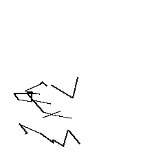
dog (α=0.50)
I am thinking about a dog.
strokes=35, malformed=42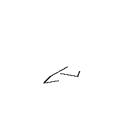
dog_a0.30 (α=0.30)
I am thinking about a dog.
strokes=7, malformed=12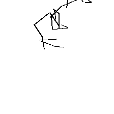
dog_a0.70 (α=0.70)
I am thinking about a dog.
strokes=39, malformed=49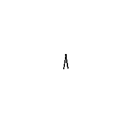
dog_a1.00 (α=1.00)
I am thinking about a dog.
strokes=2, malformed=294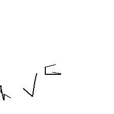
cat (α=0.50)
I am thinking about a cat.
strokes=15, malformed=188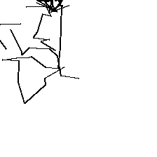
cat_a0.30 (α=0.30)
I am thinking about a cat.
strokes=72, malformed=27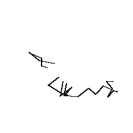
cat_a0.70 (α=0.70)
I am thinking about a cat.
strokes=29, malformed=16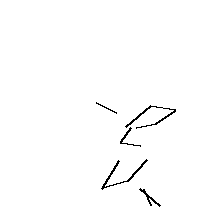
cat_a1.00 (α=1.00)
I am thinking about a cat.
strokes=19, malformed=47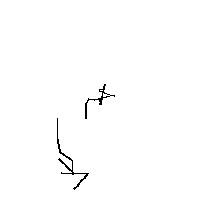
bird (α=0.50)
I am picturing a bird flying across the sky.
strokes=20, malformed=139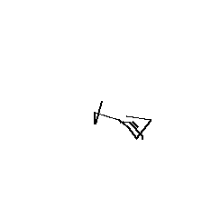
fish (α=0.50)
Imagine a fish.
strokes=18, malformed=76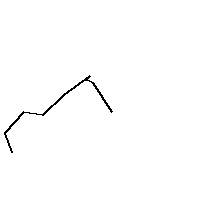
tree (α=0.50)
I am picturing a tree.
strokes=9, malformed=22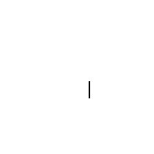
flower (α=0.50)
Imagine a flower in bloom.
strokes=3, malformed=66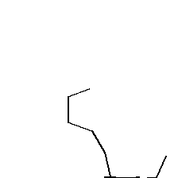
sun (α=0.50)
The sun is shining.
strokes=15, malformed=18
house (α=0.50)
I am picturing a small house with a red roof.
strokes=2, malformed=7
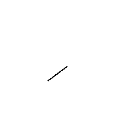
car (α=0.50)
I am thinking about a car.
strokes=5, malformed=285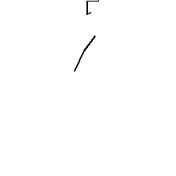
airplane (α=0.50)
I am picturing an airplane.
strokes=10, malformed=17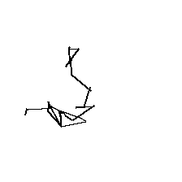
eiffel (α=0.50)
Paris, the city of lights, is famous for the Eiffel
strokes=33, malformed=34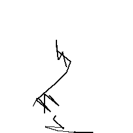
eiffel_a0.30 (α=0.30)
Paris, the city of lights, is famous for the Eiffel
strokes=31, malformed=26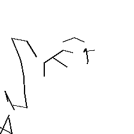
eiffel_a0.70 (α=0.70)
Paris, the city of lights, is famous for the Eiffel
strokes=35, malformed=28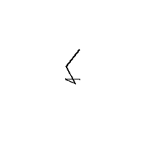
eiffel_a1.00 (α=1.00)
Paris, the city of lights, is famous for the Eiffel
strokes=4, malformed=14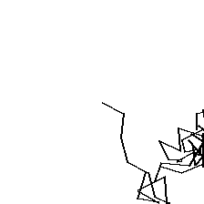
eiffel_short (α=0.50)
The Eiffel Tower is in
strokes=57, malformed=46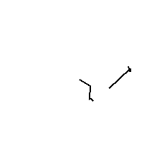
everest (α=0.50)
Mount Everest is in
strokes=10, malformed=13
capital_france (α=0.50)
The capital of France is
strokes=7, malformed=279
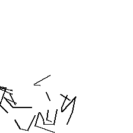
capital_france_a0.30 (α=0.30)
The capital of France is
strokes=47, malformed=43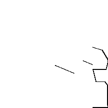
capital_france_a0.70 (α=0.70)
The capital of France is
strokes=45, malformed=21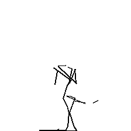
capital_france_a1.00 (α=1.00)
The capital of France is
strokes=35, malformed=20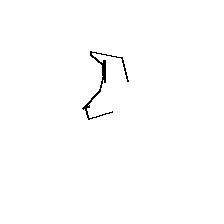
capital_japan (α=0.50)
The capital of Japan is
strokes=16, malformed=40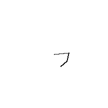
largest_planet (α=0.50)
The largest planet in our solar system is
strokes=4, malformed=271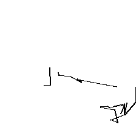
triangle (α=0.50)
Imagine a triangle inscribed in a circle.
strokes=30, malformed=14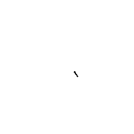
triangle_a0.30 (α=0.30)
Imagine a triangle inscribed in a circle.
strokes=5, malformed=285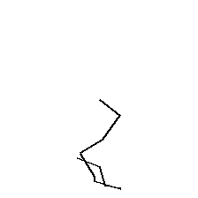
triangle_a0.70 (α=0.70)
Imagine a triangle inscribed in a circle.
strokes=10, malformed=99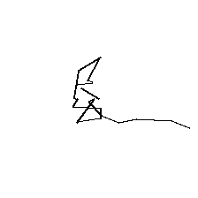
triangle_a1.00 (α=1.00)
Imagine a triangle inscribed in a circle.
strokes=21, malformed=43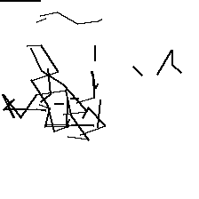
circle (α=0.50)
I am picturing a circle.
strokes=81, malformed=56
smile_face (α=0.50)
I am picturing a smiling face.
strokes=0, malformed=97
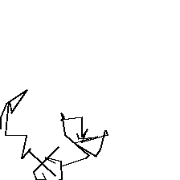
smile_face_a0.30 (α=0.30)
I am picturing a smiling face.
strokes=47, malformed=50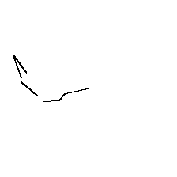
smile_face_a0.70 (α=0.70)
I am picturing a smiling face.
strokes=9, malformed=272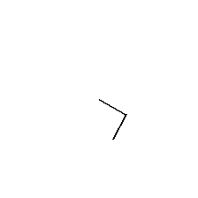
smile_face_a1.00 (α=1.00)
I am picturing a smiling face.
strokes=3, malformed=2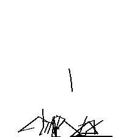
smile (α=0.50)
She smiled brightly at the surprise.
strokes=65, malformed=61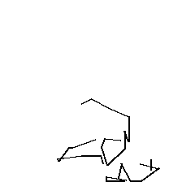
storm (α=0.50)
When the storm hit, the village
strokes=36, malformed=28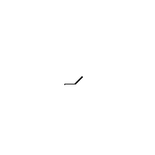
calm (α=0.50)
The lake was calm and
strokes=3, malformed=49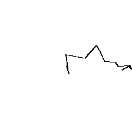
sadness (α=0.50)
I am thinking about deep sadness.
strokes=13, malformed=12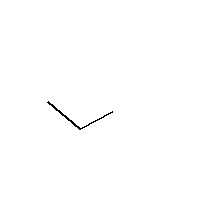
once_upon (α=0.50)
Once upon a time, in a kingdom far away,
strokes=3, malformed=291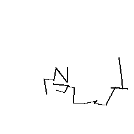
night_door (α=0.50)
In the middle of the night, the door
strokes=22, malformed=36